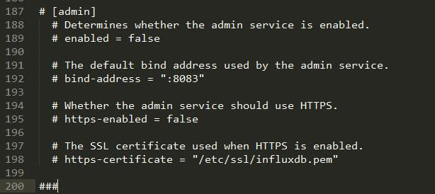

安装后web页面无法访问的解决方案
问题原因
InfluxDB在0.13版本以后，就默认关闭了web管理页面，而国内的文档大多都以旧版的InfluxDB为标准写的，所以下载安装好最新版本以后，就会出现8083端口的web管理页面访问不了的问题。
解决方案
新版的InfluxDB虽然默认关闭了web管理页面，但我们可以通过很简单的方式进行开启。
打开配置文件，找到如下几行：

将这几个配置之前的注释号去掉，将enabled改为true即可，[admin]这个的#号也要去掉。
https酌情开启。
另外，在配置文件中还写着，这个web管理界面将在1.1以后的版本中删除。
本人感觉这个web界面还是挺方便的，停用以后无疑会给我们的工作造成很大不便，对他们的这个决定不是很理解。